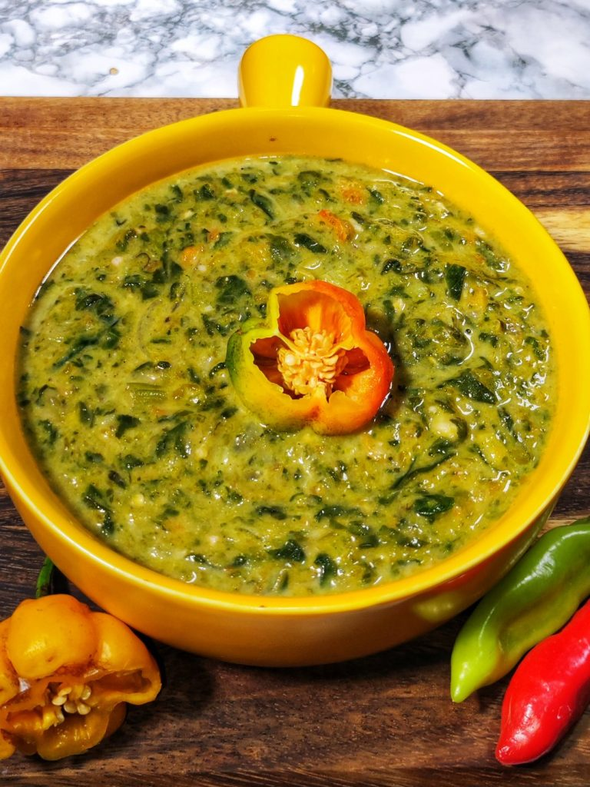

CALLALOO RECIPE

DESCRIPTION
Trini Callaloo: A flavorful Caribbean delicacy featuring vibrant dasheen bush leaves,
and a medley of vegetables simmered in rich coconut milk finished with a hint of heat from a hot pepper,
this dish is a true taste of Trinidad and Tobago. Perfectly balanced and bursting with island flavors,
Trini Callaloo is a must-try for any food enthusiast looking to experience the essence of Caribbean cuisine.
INGREDIENTS
- 1 tablespoon extra virgin olive oil
- 2 (10 oz) packages of frozen chopped spinach OR 1 1/2 - 2 lbs young dasheen bush leaves and stems ( 1 bundle)
- 1/2 - 1 lb pumpkin (squash or calabaza), cubed (frozen or fresh)
- 1/2 - 1 lb ochro, sliced in 1/2 inch pieces, (frozen or fresh)
- 1 medium carrot, thinly sliced
- 1 medium onion, chopped
- 4-5 scallions, finely chopped (about 1 1/2 cups)
- 1 small bunch thyme (about 8 sprigs, whole or chopped finely)
- 8 large garlic cloves, minced
- 3 tablespoons green seasoning
- 1 stalk celery, finely chopped, optional
- 2 cups fresh coconut milk + 2 cups water, or more if you want more liquid
- salt and pepper ( I used 3 tsps Himalayan Salt salt and 1 tsp freshly ground black pepper)
- 1 habanero pepper and 2 pimento peppers
- Optional- Meat or Seafood: Crab, chicken or pre cooked pig tail (2 lbs)
STEPS
- In a stockpot over low heat, add spinach, pumpkin, carrots, ochroes, scallions, celery, onion, thyme, garlic, green seasoning, oil and the habanero pepper. Add protein if using.
- Pour in coconut milk to pan, season with salt and freshly ground black pepper.
- Cover and simmer for 1 hour until all ingredients are cooked and soft, stirring every 10 minutes to combine the flavors and prevent sticking to the bottom.
- When finished, remove habanero pepper (being careful not to burst it) and (meat if using) and swizzle using a swizzle stick (also called dhal ghutney in Trinidad) to break up chunks. You may also use a food processor or blender or hand immersion blender for a smoother texture.